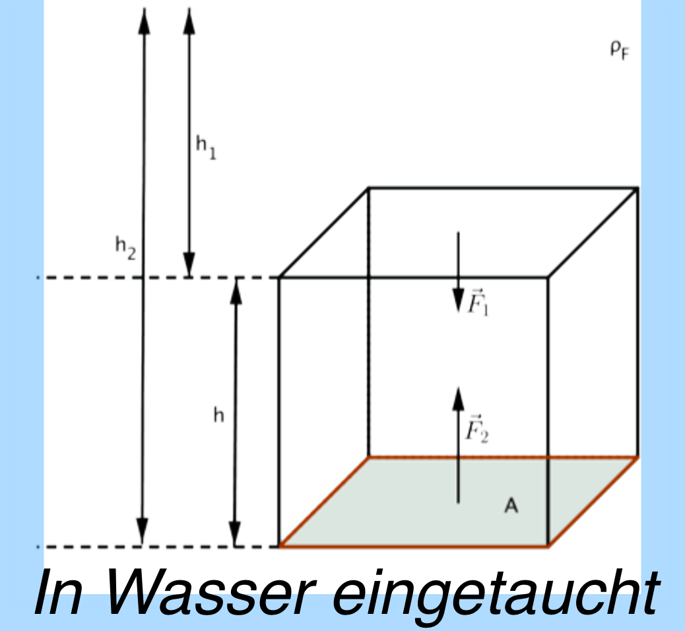

Auftrieb
Auftriebskraft
Auf in Flüssigkeiten eingetauchte Körper wirkt eine der Gewichtskraft entgegen gerichtete Kraft: die Auftriebskraft $\overrightarrow{F_A}$.
Herleitung
Der Betrag der Auftriebskraft $\overrightarrow{F_A}$ kann auch berechnet werden.
Er ergibt sich durch: Die Auftriebskraft $\overrightarrow{F_A}$ ergibt sich aus der Resultierenden der Kräfte $\overrightarrow{F_1}$ und $\overrightarrow{F_2}$. Unter Berücksichtigung der Richtungssinne erhalten wir für den Betrag der Auftriebskraft:
$$ F_A = F_1 - F_2 $$
Für die Kräfte gilt: $F_1 = p_1 \cdot A$ und $F_2 = p_2 \cdot A$
und für die Drücke: $p_1 = \rho_F \cdot g \cdot h_1$ und $p_2 = \rho_F
\cdot g \cdot h_1$
Daher:
$$ F_A = p_2 \cdot A - p_1 \cdot A $$ $$ = \rho_F \cdot g \cdot A \cdot h_1 - \rho_F \cdot g \cdot A \cdot h_2$$ $$ = \rho_F \cdot g \cdot \underbrace{ A \cdot \underbrace{\left( h_2 - h_1 \right)}_{= h}}_{=V_K} $$ $$ = \rho_F \cdot g \cdot V_K $$Formel
$$ F_A = \rho_F \cdot g \cdot V_K $$Archimedisches Prinzip
Der Betrag der Auftriebskraft ist gleich dem Betrag der Gewichtskraft der verdrängten Flüssigkeit.
Mathematisch
Für das Volumen der verdrängten Flüssigkeit:
$$ V_K = V_{FL} $$Also gilt:
$$ F_A = \rho_{FL} \cdot g \cdot V_{FL} $$ $$ = m_{FL} \cdot g $$ $$ = F_{G, FL} $$wobei $F_{G, FL}$ die Gewichtskraft der verdrängten Flüssigkeit ist.
Steigen, schweben, sinken
Zusammenhang zwischen Gewichtskraft und Auftriebskraft:
-
Steigen: $F_A > F_G$
-
Schweben: $F_A = F_G$
-
sinken: $F_A < F_G$
Daraus lässt sich ein einfacher Zusammenhang zwischen der Dichte der Flüssigkeit $\rho_{FL}$ und der Dichte des Körpers $\rho_{K}$ ableiten:
Da: $F_G = m_K \cdot g = \rho_K \cdot V_K \cdot g$, ergibt sich für:
$$ F_{G}\gtreqless F_{A} $$ $$ \Leftrightarrow \rho_{K} \cdot V_{K}\cdot g\gtreqless \rho_{F} \cdot V_{K}\cdot g$$ $$ \Leftrightarrow \rho_{K} \gtreqless \rho_{F} $$
Also:
$\rho_{K} > \rho_{F}$: Der Körper sinkt; $\rho_{K} = \rho_{F}$ : Der
Körper schwebt; $\rho_{K} < \rho_{F}$ : der Körper steigt bis er
schwimmt.
Auftrieb in der Luft
Genauso wie in Flüssigkeiten gibt es auch in Luft (oder anderen Gasen) eine Auftriebskraft. Diese Auftriebskraft entsteht auch hier durch die Veränderung des Schweredrucks der Luft mit der Höhe. Nimmt man an, dass sich der Luftdruck zwischen dem unteren Rand und dem oberen Rand des Körpers nicht verändert, so kann auch die zuvor erstellte Formel angewandt werden, nur muss nun die Dichte der Luft ($\rho_{Luft} = 1,29 \frac{g}{L}$) anstatt der Dichte der Flüssigkeit benutzt werden:
$$ F_A = \rho_{Luft} \cdot g \cdot V_K $$